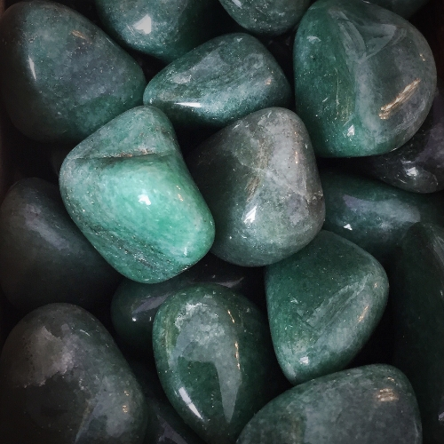

Aventurin diğer adı ile Yıldız Taşı mavi, turuncu ve yeşil renklerde bulunabilen kuvars grubuna ait bir taştır. Genel olarak yeşil tonlarında bulunur ve bu nedenle aventurin denildiğinde akla ilk olarak yeşil aventurin gelir. Bünyesinde zerrecikler halinde pırıltılar bulunur. Duygusal bakımdan dengeleyici ve depresyona karşı etkili olduğuna inanılan bir taştır. Kendinizi mutlu hissetmek için kullanabileceğiniz bir taştır. Metalik parıltılar saçan ve tanecikli bir yapıya sahiptir. Aventurin taşına aynı zamanda Yıldız Taşı da denmektedir. Kumtaşı da pırıltılı olması sebebi ile Yıldız olarak bilinir ancak ikisi farklı taşlardır. Aventurin kalbin yakınına yerleştirildiğinde, negatif enerjiden korur. Bu taşın Yeşim taşı ve Pembe Kuvars arasında bir yumuşaklığı vardır. Bu pürüzsüz taşı göğsünüzün üzerinde doğrudan cildinize temas ettirmek en iyi yoldur. Bu taş sınırsız imkanlar taşıdır, size geniş ufuklar açar. Kendinizi sınırlanmış, engellenmiş, dar düşünce kalıpları ya da modası geçmiş davranışlar içine sıkışmış hissettiğinizde bu taşı kullanabilirsiniz.
Labradorit, mistik güçleri, gizli potansiyeli ortaya çıkararak sezgileri kuvvetlendiren büyü taşı olarak da bilinir. Hava elementini temsil eden bu kristal, astrolojik olarak Neptün gezegeniyle ilişkilidir. Labradorit doğada bulunan en güçlü kristallerden biridir, dolayısıyla bir mücevher olarak takmak veya taş halinde bir parçasını sürekli yanınızda taşımak kişinin titreşimini güçlendirmek ve olumsuzluklara karşı korumak için çok etkilidir.
Amazonit yatıştırıcı bir taştır.Birden çok konuda güçlü şifacılığı ile bilinse de sembol ettiği özellikler güven, iletişim ve yaratıcılıktır. Amazonit taşı faydaları bulunduğu ortama pozitif enerjiler getirmektir. Beyni ve sinir sistemini yatıştırır ve optimum sağlığın korunmasına yardımcı olur. Eril ve dişil enerjileri dengeler. Bir sorunun her iki tarafını veya farklı bakış açılarını görmenize yardımcı olur. Duygusal travmayı yatıştırır, endişe ve korkuyu hafifletir. Sinir sistemindeki negatif enerjiyi, şiddetlenmeyi ve tıkanmaları giderir. Evrensel sevginin tezahür ettirilmesine yardımcı olur. Elektromanyetik kirliliğe karşı korur ve mikrodalgaları emer.
Rahatlama taşı olarak da bilinen Akuamarin, kişinin hem fiziksel hem de ruhsal anlamda yatışmasına, sakinleşmesine yardımcı olur. Stresi azaltması, öfkeyi dindirmesi ve bireyin sakinleşmesine yardımcı olduğu için Akuamarin taşı pek çok kişi tarafından tercih edilir.
Kalsit sözcüğü; Latince “kireç” anlamına gelen “calc” kelimesinden gelen Antik Yunan’a kadar uzanmaktadır. Deniz canlılarının kabuklarındaki ana bileşen olan kireç taşı, kalsit taşına inanılmaz bir renk ve çeşitlilik yelpazesi vermektedir. Bu taşın emilim gücü; toksik duyguları ve olumsuzlukları emen güçlü bir süngere dönüştürmektedir.Bu taş ile güne her zaman hayatın güneşli tarafında başlanır.